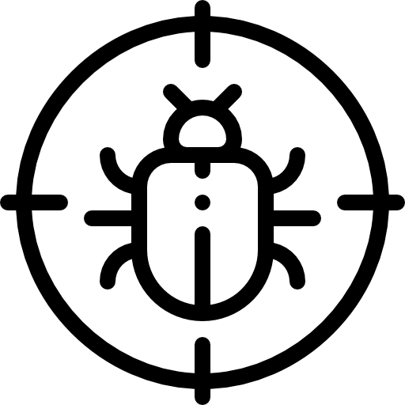

<ion-tabs>

  <ion-tab-bar slot="bottom">
    <ion-tab-button tab="home">
      
      <ion-label>Home</ion-label>
    </ion-tab-button>

    <ion-tab-button tab="tab2">
      
      <ion-label>Favorites</ion-label>
    </ion-tab-button>

    <ion-tab-button tab="tab3">
      
      <ion-label>Settings</ion-label>
    </ion-tab-button>
  </ion-tab-bar>

</ion-tabs>